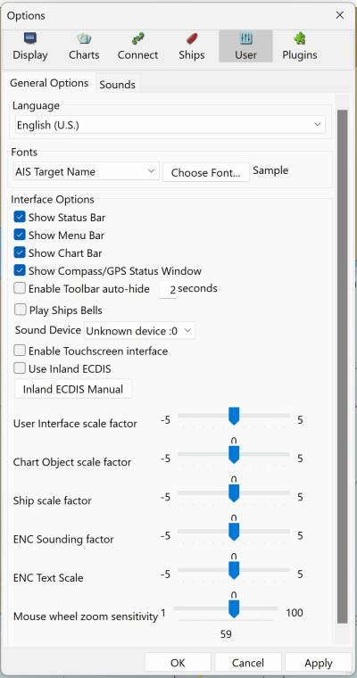
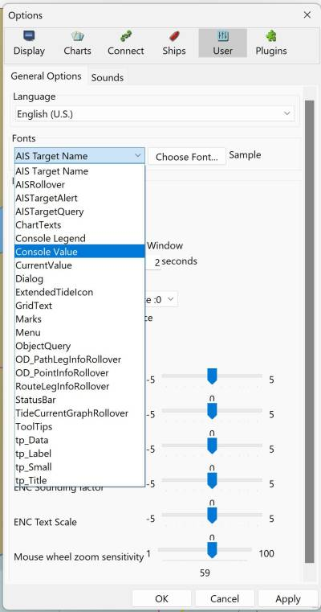
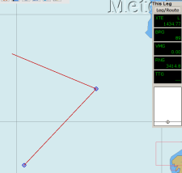
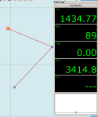
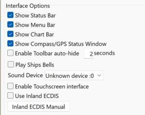
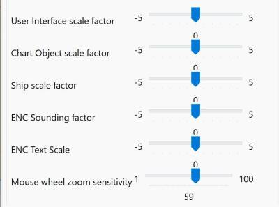

User Interface
General Tab

Languages:
The following languages are available in OpenCPN:
Brazilian |
Portuguese |
Catalan |
Chinese |
Traditional |
Czech |
Danish |
Dutch |
English |
Estonian |
Finnish |
French |
Galician |
German |
Greek |
Hungarian |
Italian |
Norwegian |
Bokmaal |
Polish |
Portuguese |
Russian |
Spanish |
Swedish |
Choose your language here. Make sure your selected language has the support files installed on your computer (Linux). Default language is US English.
Remark: Changing the language will reset the font settings.
Fonts

After a new OpenCPN installation, fonts are set to default fonts. The Font dialog permits user adjustment to make text more legible. Text displayed on vector charts can be adjusted. The Font management module, depends on having the particular font displayed at least once. for example, "AIS rollover" otherwise it will not show in the list.
Pick from the Dropdown List
| Dropdown List | Description |
|---|---|
AIS Target Name |
AIS Target Name font size |
AIS Target List |
AIS Target List font size |
AISRollover |
AIS Yellow rollover font size |
AISTargetAlert |
AIS Popup alert font size |
AISTargetQuery |
AIS Query Popup |
ChartTexts |
Chart names font |
Console Legend |
Active Route Console XTE, Bearing, etc (upper right black box, see below) |
Console Value |
Active Route Console - Font Size of the data presented |
CurrentValue |
Tidal-Current Icon font size |
Dialog |
User Interface Menu Dialogs |
ExtendedTideIcon |
Tide Icon font size |
Gridtext |
Lat/Long text at edge of chart |
Marks |
Properties font size |
Menu |
Main menu font size |
ObjectQuery |
Object Query font size |
OD_PathLegInfoRollover |
OD Plugin Yellow Rollover font size |
OD_PointInfoRollover |
OD Plugin Yellow Rollover font size |
RouteLegInfoRollever |
Route Leg Yellow Rollover font size |
StatusBar |
Status Font at bottom |
TideCurrentGraphRollover |
Tide & Current text Yellow background |
ToolTips |
Toolbar tip hoover text |
 --→ 
The result of adjusting the "Console Value" font size.
Interface Options

Show Status Bar
The status bar at the bottom of the display contains a lot of navigation information. If you have this info available elsewhere turning this setting off increases the available space for the chart.
Show Menu Bar
Show/Hide the Menu Bar. More about
MenuBar
Short Cut: "Alt"
Show Chart Bar
Show/Hide the Chart Bar. More info available on the
Chart Status
page.
Short Cut: "Ctrl + B"
Show Compass/GPS Status Window
Show/Hide the Compass/GPS Status Window. More info on the
GNSS Status
page.
Short Cut: "Ctrl + I"
Play ship bells
Every half-hour the traditional ship’s bell will be heard.
-
Refer to https:en.wikipedia.org/wiki/Ship%27s_bell] if you are not familiar with them. * Also [[https:www.clockguy.com/SiteRelated/SiteReferencePages/ShipsBellsExplained.html|Ships Bells Explained.html]
Enable Touchscreen Interface
Read more at Touch Screen
Use Inland ECDIS
Switch to compliance mode for Europe Inland Waterways ECDIS in information mode.
Selecting "Use Settings for InlandECDIS Version 2.3" will have effect on
your Toolbar Icons!
Only 7 of the 17 available Toolbar Icons will be visible, as required by
the compliance mode.
You can select other Toolbar Icons, but your changes will not be saved when you exit OpenCPN.
Scale Factors & Adjustments

OpenCPN 5.8 is "DPI Aware" for Windows users, adjusting settings to the "Scale Factor" being used, also UI Scale Factors settings have been improved and clarified.
User Interface Scale Factor
If either of the Graphical User Interface boxes are checked, the slider "User Interface scale factor" changes the size of the Tool Bar, Chart Bar and the GPS status icon. Useful to adjust the size of the UI.
Chart Object Scale Factor
If the "Enable Tablet Scaled Graphics interface" is checked, the slider "Chart Object scale factor" changes the size of chart objects including: Depth Soundings, Marks, Routes, Buoys, Daybeacons, Wrecks and Rocks.